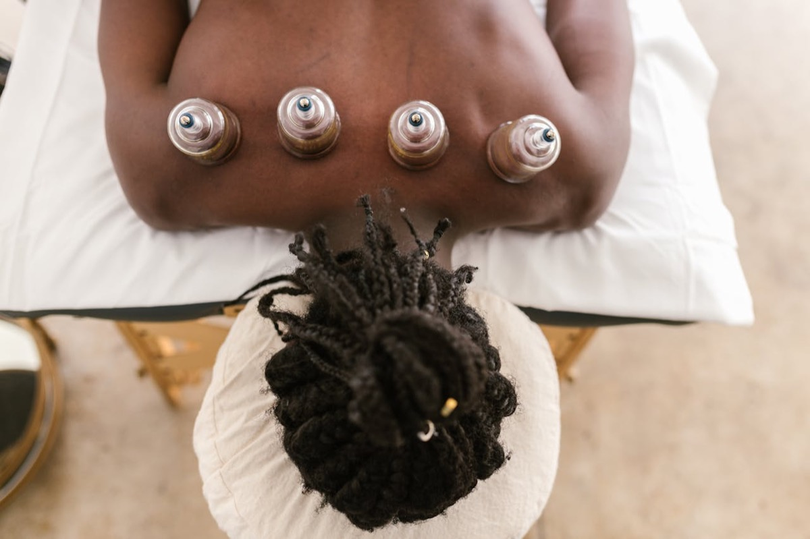

The treatment
Wet cupping and hijama, explained properly
One clinic, one service, done carefully. Here is everything that happens in a session, the hygiene standards behind it, who should check with a doctor first, and how to prepare.
What you're booking
Every session includes
- A pre-treatment consultation covering health history, medication and goals — first visits run slightly longer for this.
- Traditional wet cupping with suction adjusted to your comfort, checked throughout.
- Sterile single-use blades and disposable cups, opened in front of you and never reused.
- A private, lockable treatment room with same-sex practitioner options for men and women.
- Wound care, a short rest, and written aftercare before you leave.
Appointments take 60–75 minutes. Pricing for each option is shown when you book on Fresha, or message us and we'll talk it through.

On the day
The session, minute by minute
Wet cupping requires judgement, hygiene awareness and calm communication. This is the exact sequence every client goes through.
-
Arrival and intake
A short form, then a conversation about your health, medications and any privacy or practitioner preferences. Nothing proceeds until you're comfortable.
-
Positioning and preparation
You undress only as much as cup placement needs. The practitioner cleans the area and explains where cups will sit and why.
-
Dry suction phase
Cups are applied for a few minutes of suction only. It feels like a strong, deep pull — the strength is adjusted to you.
-
Wet phase
Cups are lifted, very small superficial openings are made with a sterile single-use blade, and cups are reapplied briefly. Blood is captured in disposable cups and disposed of safely.
-
Dressing, rest and aftercare
The area is cleaned and covered, you rest for a few minutes with water, and you leave with written aftercare for the next 48 hours.
Hygiene, without compromise
The standards behind every appointment
Wet cupping is a blood-contact procedure. We treat it that way.
Single-use everything sharp
Sterile blades and disposable cups are used once, for you, then disposed of in sharps containers. They are never cleaned and reused.
A clean, calm room
Surfaces and any reusable tools are disinfected between clients, and the treatment room is kept quiet, private and lockable.
Insured and accountable
The clinic and both practitioners are fully insured, and every session is consultation-led with clear records of what was agreed.
Honest about safety
Who should check with a doctor first
Cupping is a complementary therapy — not a substitute for medical diagnosis or treatment. Speak with a suitable healthcare professional before booking if any of these apply:
- Pregnancy — we do not perform wet cupping on pregnant women, without exception.
- Blood-thinning medication — warfarin, rivaroxaban, apixaban, clopidogrel and similar require written GP or consultant clearance first.
- Bleeding disorders or a history of poor wound healing.
- Skin conditions — active infection, eczema or a psoriasis flare near the treatment area.
- Serious or unexplained symptoms — see a doctor first; hijama can wait.
Performed inappropriately, cupping can cause side effects including skin marks, burns, scarring and infection. This is exactly why we insist on consultation, hygiene controls and honest suitability checks.
Not sure? Ask before you book
Message us on WhatsApp or call 07552 540000 with your question. We would rather tell you honestly that today isn't the right day than take a booking we shouldn't.
If you're unwell, feverish or have broken skin near the area on the day, we'll rebook you at no charge.
Everything else
All 16 frequently asked questions
Grouped so you can find yours quickly. Still unanswered? WhatsApp 07552 540000 and we'll reply.
Understanding hijama
What is wet cupping (hijama)?
Hijama is a traditional therapy in which suction cups are applied to specific points on the body — usually the back and shoulders. After a few minutes the cups are lifted, very small superficial openings are made in the skin with a sterile single-use blade, and the cups are reapplied briefly to draw a small amount of blood, which is captured in disposable cups and disposed of safely. It is one of the practices of the Prophet Muhammad ﷺ, and we deliver it as a complementary therapy in a clean, insured clinic — never as a replacement for medical care.
Does hijama hurt?
Most clients call the sensation unusual rather than painful. The suction feels like a strong, deep pull — similar to a firm massage — and the superficial openings feel like a brief pinprick lasting a second or two. Any soreness afterwards is like mild post-exercise tenderness and normally settles within 24 to 48 hours. Your practitioner checks in throughout and adjusts the suction to your comfort.
How long does a session take?
Plan for 60 to 75 minutes: a short consultation, around 20 to 30 minutes of cup time, wound care, and a few minutes of rest before you leave. First visits run slightly longer because we take your health history and explain every step before any cups are placed.
What happens at a first appointment, step by step?
You complete a short intake form and talk through your health, medications and goals. You undress only as much as cup placement needs — privacy and modesty are respected throughout. The practitioner cleans the area, applies cups for a dry suction phase, makes light superficial openings with a sterile single-use blade, then reapplies the cups for the wet phase. The area is cleaned and dressed, and you leave with written aftercare. Read the full first-visit guide.
Is it suitable for me?
Can I have hijama while pregnant or breastfeeding?
We do not perform wet cupping on pregnant women — the risk is increased and we will not take it. We normally suggest waiting at least three months after birth. Breastfeeding clients can usually be seen after consultation; mention it when booking and we will confirm in advance.
Can I have hijama if I take blood thinners?
Not without prior medical clearance. If you take warfarin, heparin, rivaroxaban, apixaban, clopidogrel or a similar anticoagulant or antiplatelet medicine, speak to your GP or consultant first — and never pause medication on your own. If your clinician approves a managed plan, share it in writing when you book.
Is hijama safe for people with diabetes?
We can usually see clients with well-controlled type 2 diabetes who are not on insulin. If you have type 1 diabetes or use insulin, speak to your GP before booking and tell us at consultation. Because healing can be slower, we discuss aftercare carefully and use a lighter approach where needed.
Can I have hijama during my period?
We generally ask female clients to wait until the heaviest days have passed — not because it is forbidden, but because most women find it more comfortable. If you are unsure on the day, message us and we will rebook you at no charge.
Faith and timing
What are the Sunnah days for hijama?
The Prophet Muhammad ﷺ is reported to have practised cupping on the 17th, 19th and 21st of the lunar month (narrated by Anas ibn Malik, Jami at-Tirmidhi 2051), and many clients like to book on those dates — especially when they fall on a Monday, Tuesday or Thursday. We are happy to check the upcoming dates with you. If you cannot make one, hijama remains beneficial on any day; the timing is a recommended Sunnah, not a requirement.
How often should I have hijama?
For general wellbeing, most healthy adults book once every three months. Some clients attend monthly for a short course after consultation before returning to a quarterly rhythm. We do not recommend wet cupping more often than once a month.
Booking, preparation and aftercare
How much does hijama cost?
Hijama at Sincerity Cupping Clinic starts from £45. The exact price for each option — including male and female sessions — is shown before you confirm when you book on Fresha, so there are no surprises on the day. Every session includes the consultation, the treatment itself with single-use sterile equipment, and written aftercare; appointments take 60–75 minutes. If you want to talk through options first, message us on WhatsApp.
Do you offer female-only and male-only sessions?
Yes. Female clients can request Sister Aisha in a female-only environment, and male clients are seen by Brother Abu Layla. Modesty and privacy are protected throughout — just mention your preference when you book so we schedule the right practitioner and room setup.
Will I see marks, and how long do they last?
You will see round, reddish or purplish circles where the cups sat. They are not true bruises and do not normally hurt; the colour usually fades over 3 to 10 days. The faint marks from the wet phase typically heal within 7 to 14 days, supported by the written aftercare we send you home with.
How should I prepare for my appointment?
Eat a light meal one to two hours before — not nothing, and not a heavy meal just before. Drink water during the day, wear loose clothing, and bring a list of any medications. If you are unwell, feverish, or have broken skin near the treatment area, get in touch and we will rebook you.
What aftercare do I need?
For the first 24 hours: no showers, baths, pools, saunas or gyms — keep the area covered, dry and clean, rest and stay hydrated. Light walking is fine; strenuous exercise waits 48 hours. Many clients also avoid heavy meat and dairy for a day. If you notice spreading redness, fever, increasing pain or discharge, contact us or your GP straight away. Read the full aftercare guide.
Are your practitioners insured and trained?
Yes. Both practitioners are fully insured, with over 20 years of experience each, and every session is consultation-led. We use single-use sterile blades and disposable cups for every client, and disinfect surfaces and reusable tools between appointments in line with best practice for blood-contact procedures.
Where is the clinic and how do I book?
We are at 330 Streatham High Rd, London SW16 6HH — easy to reach from across South London. Book online on Fresha, message us on WhatsApp, or call 07552 540000. Open every day, 10:00–19:00.
Ready when you are
Book online in about two minutes, or message us first if you want to check suitability.